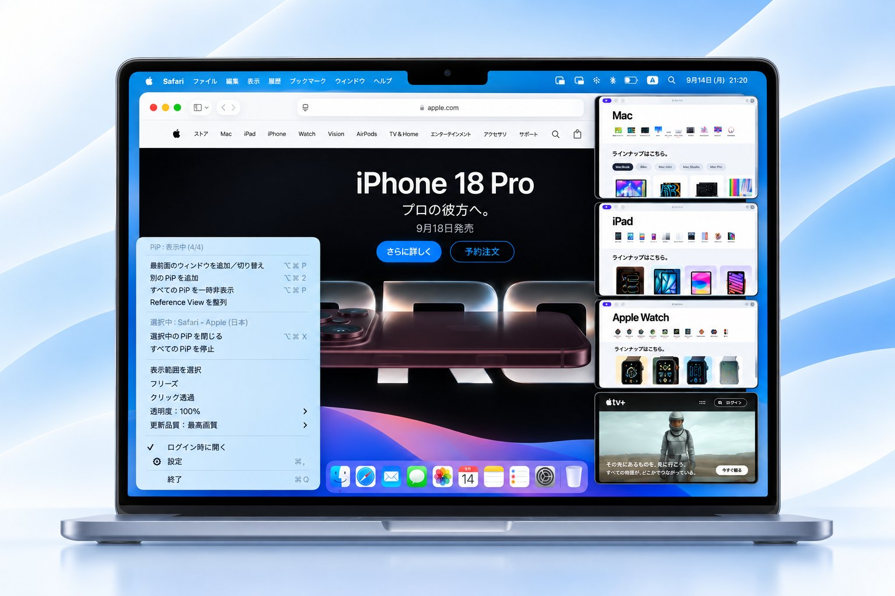
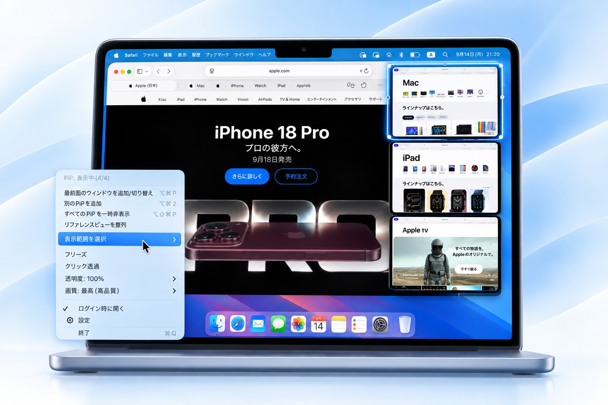
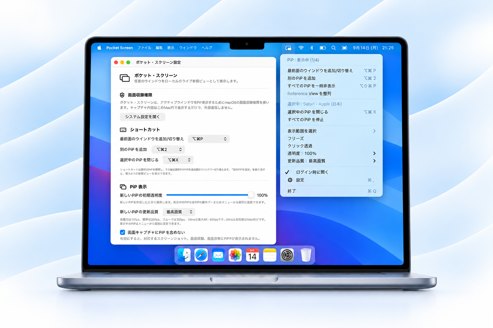

画面を行ったり来たり
確認するたびにウィンドウを切り替え、集中が少しずつ途切れる
見ておきたい画面を、作業中も手元に
カフェでも、オフィスでも、出張先でも
無料で使い続けられます1回10分まで何度でも期間制限なし登録不要

一画面の仕事は、意外と忙しい
資料を開く作業画面に戻る分からなくなって、また資料を開く外部ディスプレイがない場所では、この小さな往復が何度も発生します
確認するたびにウィンドウを切り替え、集中が少しずつ途切れる
資料を確認しながら、そのまま書く画面を往復せずに仕事を続けられます
仕事の場所が変わっても、使い方は変えない
カフェ、図書館、コワーキングスペース、フリーアドレスのオフィス、出張先限られた画面でも、参照と作業を同時に進められます
カフェで
PDFやWebページを確認しながら、メールや文書を作成
オフィスで
手順書やタスクを手元に置き、入力や更新をそのまま続ける
出張先で
タイマー、進捗、チャットなど、気になる画面を隅に表示
Reference View
複数の参照ビューを並べたり、見たい範囲だけを表示したり。メインの作業を止めずに確認できます。


設定もシンプル
Energy Saver / Standard / Smooth / Ultra。解像度やfpsを細かく設定せず、使い方に合わせて選べます。
まずは無料で、いつもの仕事に
1回10分までなら、期間制限なく何度でも利用できます。まずは無料で試し、使い方に合わせて無制限版を選べます
無料版
期間制限なく、使い続けられます
無制限版
または ¥500 / 月
ブラウザ、文書、PDF、動画、ダッシュボードなど、対応するMacのウィンドウを小窓として表示できます
はい。ユーザーの声を受けて、v2.0から一つのウィンドウを元に複数の小窓を作れるようになりました
いいえ選択したウィンドウはMac上でローカル表示され、開発者サーバーや外部AIサービスへ送信されません
まず無料版で試し、長時間の利用やより多くの参照、高画質が必要になったら無制限版を選べます。具体的な違いは上の料金欄にまとめています
macOS 26以降では、対応するスクリーンショット、画面収録、画面共有から小窓を除外できます
macOS 14以降に対応し、Apple silicon MacとIntel Macの両方で利用できます
次に外で仕事をするときに
まずは無料で試して、必要になったら無制限版へ